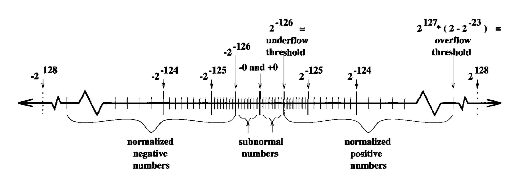

1.5 浮点运算(Floating Point Arithmetic)
-3.1416 的科学计数法表示为：
- 基(base)
- 分数(fraction)
- 指数(exponent)
- 符号(sign)
计算机用类似的方式来表示数字， 称为浮点数(floating point)， 如：
编程练习: 利用 Python 编写一个程序把二进制的浮点数字符串转化为十进制的数，
二进制字符串的格式如下 .10101*2^3。
如果尾数的第一位数是非零的数，则称对应的浮点数为规约(normalized)的, 如
- 规约确保每个浮点数都用一个唯一的二进制串来表示。
- 规约形式的浮点数第一位永远为 1, 实际上可以不存储，尾数多了一位来更精确地表示数。
- 基是浮点数最重要的参数。
- 分数的位数决定了浮点数的表示精度
- 指数决定了浮点数能表示的最大最小值范围。
- 不同的浮点数还表现在其它方面，如
- 如何处理舍入
- 如何处理 underflow 和 overflow
- 是否允许
- NaN (Not a Number)
浮点数的表示误差
浮点数 有 5 个 10 进制数字表示，故所有小于 的信息可能被丢失这意味着若 是一个实数，其最佳的 5 位数字近似数 是 , 则在 中的 相对表示误差是 :
在一个 位数字和基为 的浮点运算中的最大相对表示误差是
它是 1 和下一个最大的浮点数 之间距离的一半。
以 10 进制有 5 位尾数的浮点数为例，区间 之间的数的浮点数 表示都为
其最大的表示误差为
IEEE 浮点数标准
IEEE Single precision
- 符号 : 1 位
- 指数 : 8 位
- 分数 : 23 位
其表示的数为
- 最大相对表示误差 。
- 下界为 (, underflow threshold)。
- 上界为 (, overflow threshhold)。

IEEE Double precision
- 符号 : 1 位
- 指数 : 11 位
- 分数 : 52 位
其表示的数为
- 最大相对表示误差 。
- 下界为 (, underflow threshold)。
- 上界为 (, overflow threshhold)。
舍入误差 (Roundoff Error)
当计算 时（ 可以是加、减、乘、除四种运算中的任意一种）， 其结果不能精确地表示成一个浮点数，则它被放到内存或寄存器之前，必须用一个邻近的浮 点数来近似表示。 用 表示这个近似, 则称
为舍入误差。
若 是一个最接近于 的浮点数，则称运算进行了正确地 舍入。 当正确地舍入时，且 没有溢出，则记
其中 $\abs\delta$ 以 $\varepsilon$ 为界， 称 $\varepsilon$ 为机器精度 (machine epsilon, machine precision, or macheps)。
- IEEE 标准的浮点运算也保证